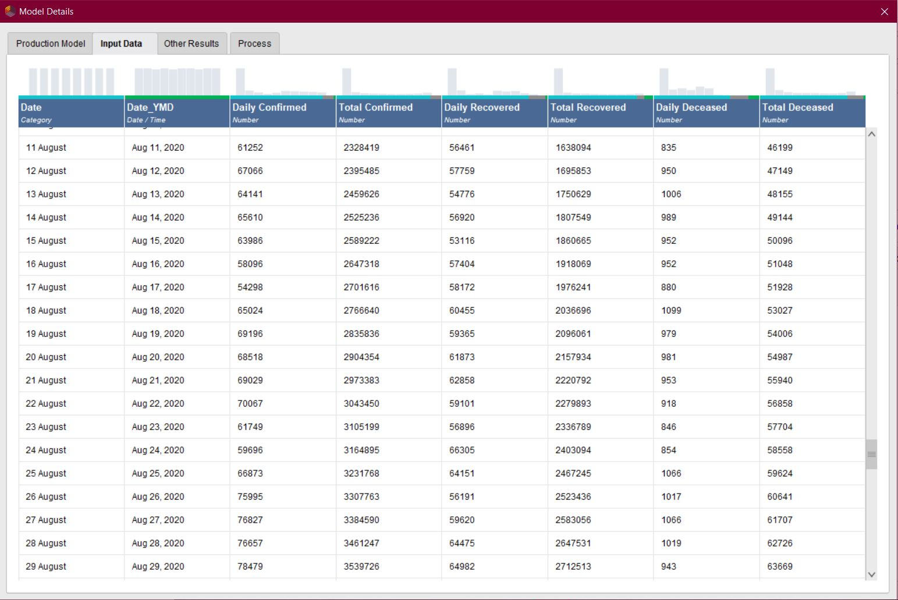
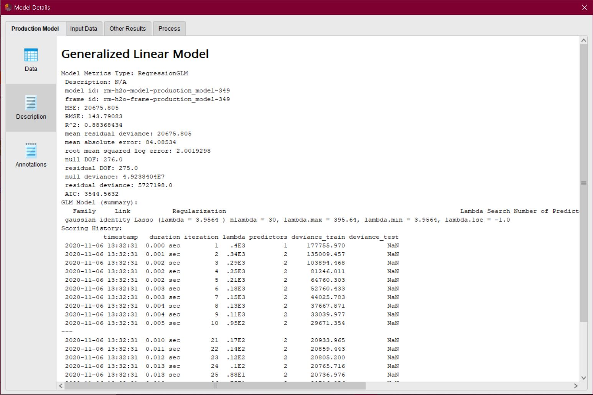
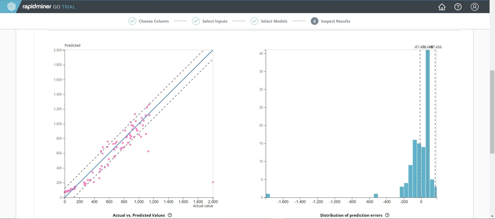
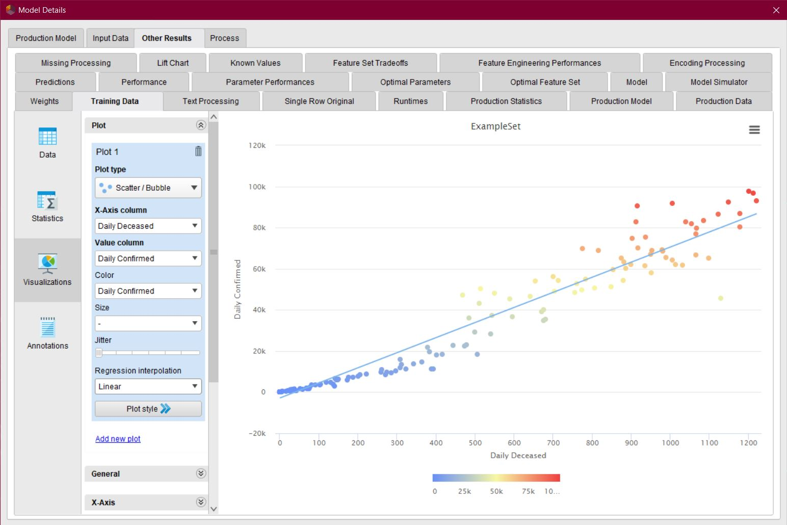

Multiple Linear Regression
- Independent Variables: Daily recorded cases and daily recovered cases.
- Dependent Variables: Daily deaths recorded.
- The Dataset:

- The model is created and hosted on RapidMinerGo and can be interacted with over the internet via sending JSON api calls and getting a response in the form of the daily deaths predicted.
- Training details of the Model:

- Statistics of the trained Model:
The model has a R^2 value of 0.955 which is considered to be a good value, and it has a mean squared error of 86.117, which means in cases, the actual value can be +or- 86.
- Plotting Actual vs Predicted Values and Error Distribution of the Model:

- An example of prediction of daily deaths:
- Plotting Daily Confirmed vs Daily Deceased:
